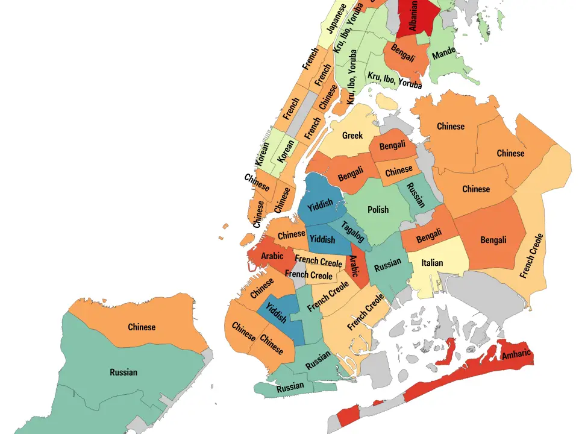

U nastavku pročitajte nekoliko zanimljivih činjenica o New Yorku
1. Central Park ubraja se među najveće parkove svijeta. Dio je New Yorka i zauzima 800 hektara zemlje te je samim time veći od jednoga Monaka. Ovaj park godišnje posjeti čak do 35 miliona turista.

2. Godišnje se na ulicama New Yorka snimi prosječno 50 000 scena, što uključuje reklame, emisije, filmove, serije, dokumentarne filmove, glazbene spotove i sl.
3. Možda ste čuli za park Highline, smješten iznad ulica New Yorka. Ali, jeste li čuli za The Lowline? To je prvi podzemni park na svijetu na svijetu i nalazi se na zapadnoj strani Manhattana.
4. New York je jezično najrazličitiji grad na svijetu. Govori se više od 800 jezika, a gotovo polovica njegovih stanovnika ne govori engleski kod kuće. Dakle, ako ne znate ovaj jezik, to nije opravdanje da ne otputujete u New York.
5. New York taksiji su žuti jer je ta boja najvidljivija izdaleka. Tako barem tvrdi studija na Sveučilištu Chicago na koju se oslanjao osnivač tvrtke Yellow Cab Company. Trenutno u New Yorku cirkulira više od 12 700 licenciranih taksija.

6. Otok Manhattan, na kojem je postavljen i sam Kip slobode, jednom je kupljen od lokalnih Indijanaca za stvari jednake suvremenom iznosu od 1000 dolara. Danas je cijena Manhattana 50 milijardi dolara.
7. Podzemna željeznica New Yorka najveća je na svijetu, sa 472 stanice. Svaki dan do 8 milijuna ljudi koristi njegove usluge, što je usporedivo s brojem lokalnog stanovništva.
8. Javna knjižnica u New Yorku ima više od 50 milijuna knjiga i drugih predmeta i drugi je najveći knjižnični sustav u zemlji nakon Kongresne knjižnice. To je ujedno i 3. najveća knjižnica na svijetu.